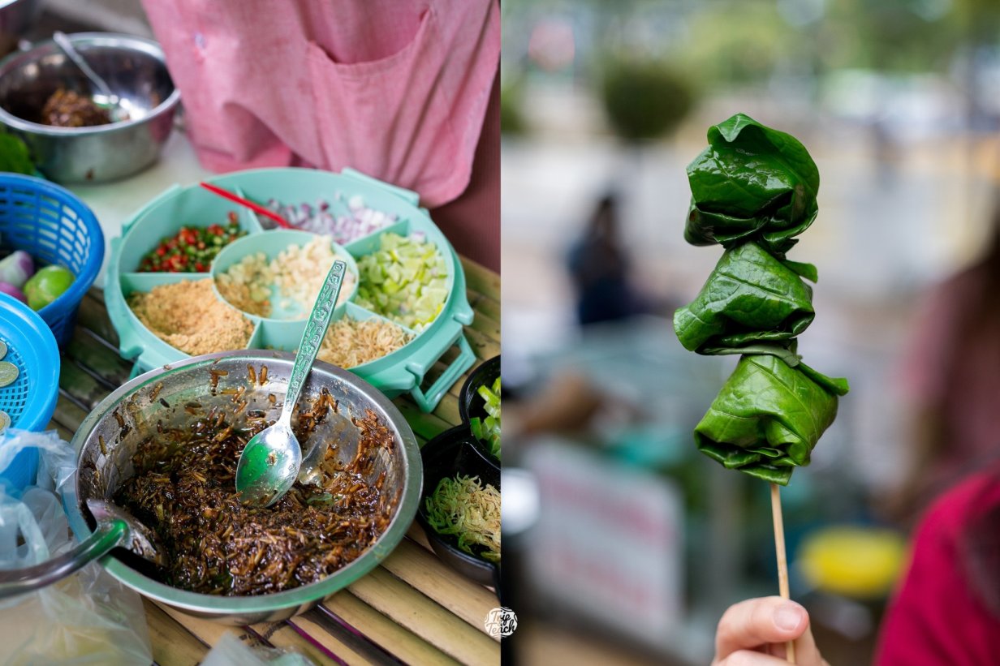

Walking Street เมืองเพชรของกินเพียบเด็ดทุกร้าน
เด็ดจริงค่ะ ที่ถนนคนเดินเพชรบุรี เดินถนนนี้ลืมหิวเพราะของกินน่ากินตลอดทางจริงๆ
ของเค้าดีมากกกก คนชอบกินเนื้อวัวหวรโดนร้านเนื้อย่างเสียบไม้ พร้อมข้าวเหนียวร้อนๆ
เดินไปเดินมาต้องย้อนกลับมาซื้อเนื้อร้านนี้กว่า2รอบ ตลาดเปิดตั้งแต่ 4โมงเย็น ถึง สองทุ่มค่ะ